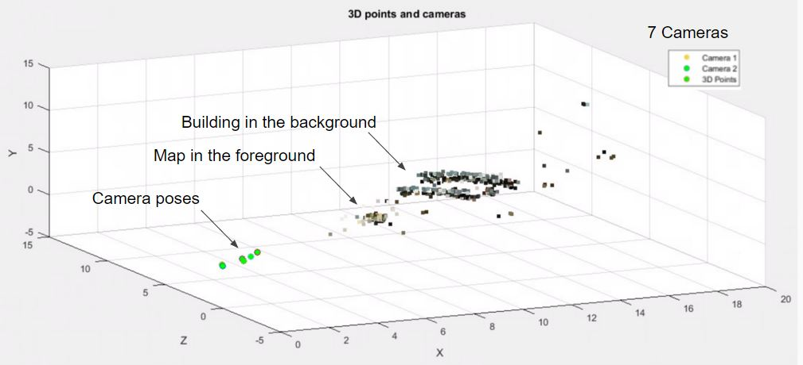
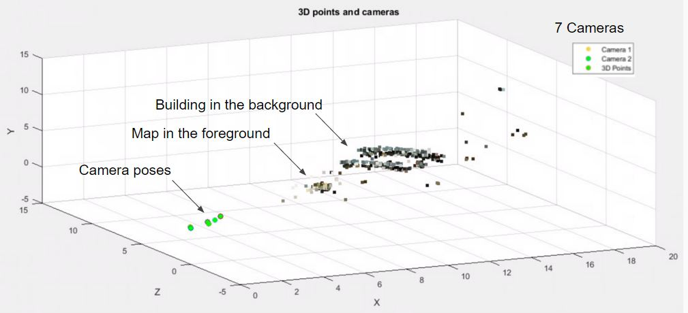

Structure from Motion (SfM) takes a series of images, such as a video, and recreates the scene in 3D (structure) and traces the path that the camera took through the environment (motion). The structure-from-motion problem has only recently been solved yet it's impact in various fields has been enormous. It has allowed researchers to map out an entire city using pictures crowd-sourced from Flickr and Hollywood directors to insert computer generated characters into their scenes without green screens.


Generated 3D points from 2D images
To correlate the motion between several images first run a feature detection algorithm on image pairs. We can use the Harris Corner Detector or the more robust Speeded-Up-Robust-Features (SURF) detector. By finding matching points between images we can begin to find the relationship between the cameras, which is embedded in the Fundamental Matrix. The Fundamental Matrix operates on a point on Image 1 and creates corresponding epipolar line on Image 2, which should pass through the matching point on Image 2.

Feature matching

Epipolar lines showing relative motion of camera
What follows is a whole bunch of calculations to figure out where the pictures were taken in the real world relative to each other. Let's just take two pictures, from Camera 1 and 2. From one frame to the next, the camera can move up, down, left, right, and tilt in three different axes. Using the Fundamental matrix we can calculate four potential positions for Camera 2 relative to Camera 1. The trick to finding the right one is to triangulate the matched points from the previous step and pick the candidate that puts the most points in front of both cameras. Even after all these calculations, we only know the general direction of where Camera 2 lies, but not how far away it lies. We assume Camera 2 lies one unit away (unless we're given how big something in the picture is)and scale Camera 3,4,5... locations accordingly. If you're interested in all the math behind this check out my presentation .


Lots of calculations to estimate camera locations
Figuring out virtual camera locations by triangulating matched features
Structure from motion works indoors and outdoors, as long as the feature detection algorithm can detect "interesting points" (blank walls are a problem). Our quantified results are listed in our paper.
 

Outside Stacks Auditorium in UMich.


Indoor scene of ruler, can, eraser, and tape
What's really interesting here is that we can take any video (even from Youtube) and "reconstruct" the scene with 3D points. This method can also be used to give robots a sense of their surroundings with only one camera; this is also known as Visual Simultaneous Location and Mapping (VSLAM).